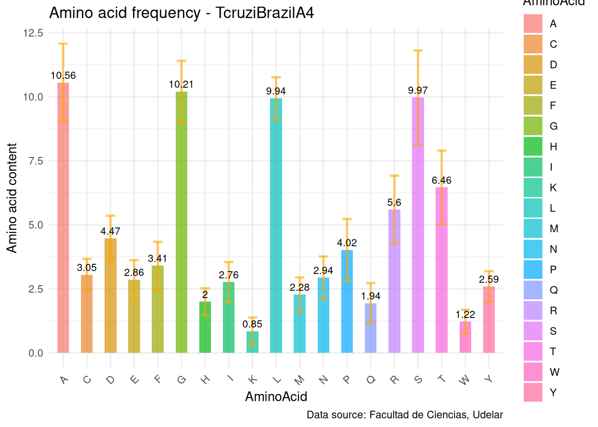
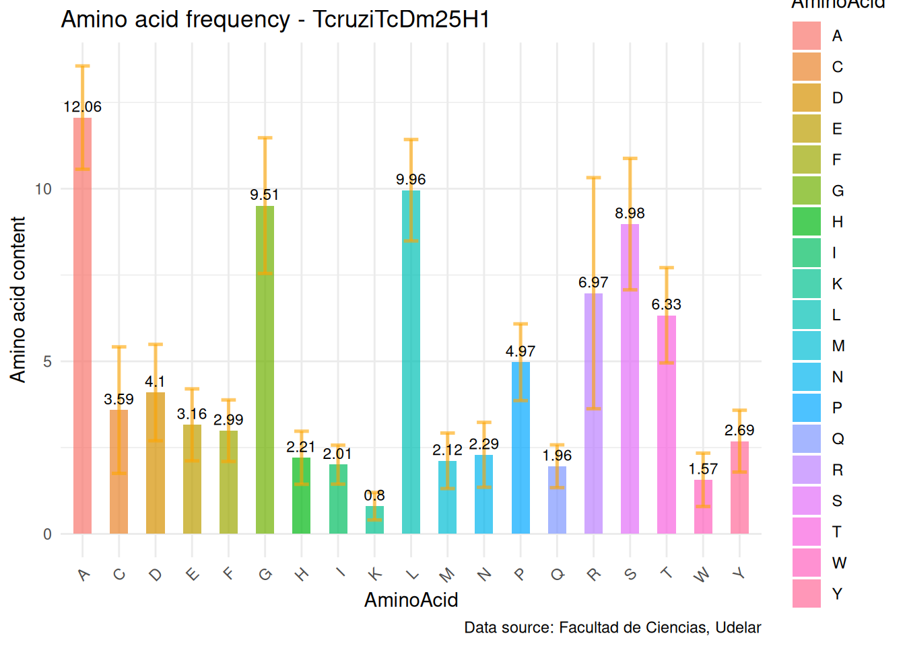
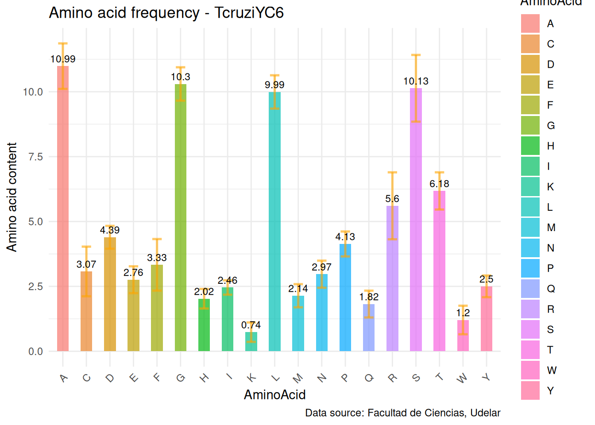
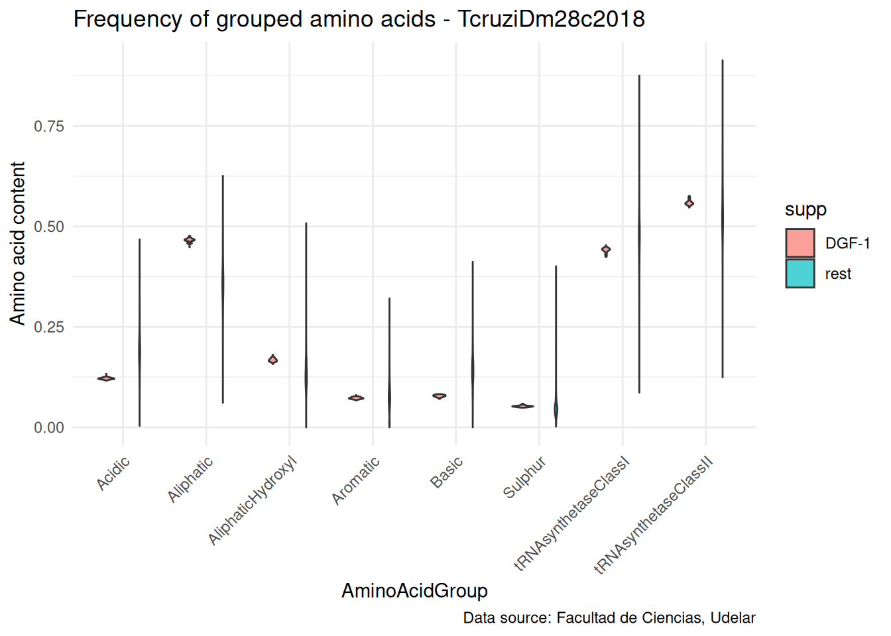
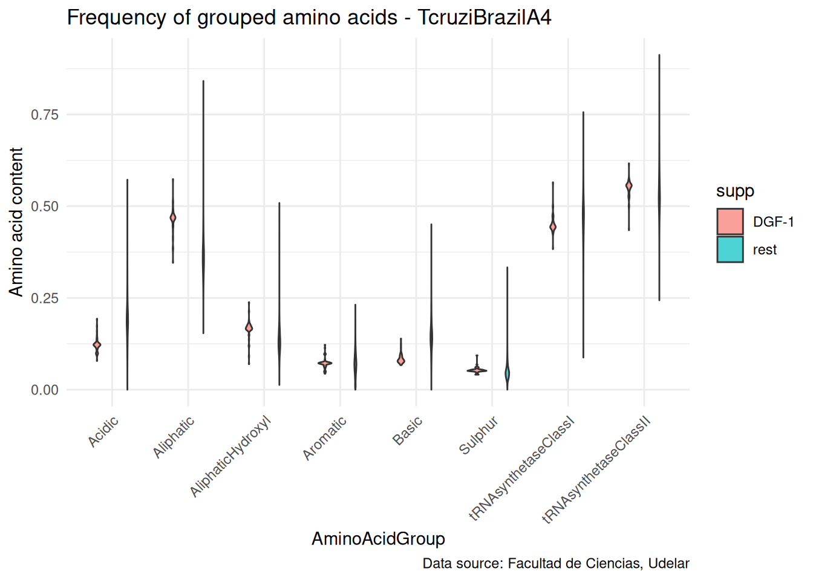
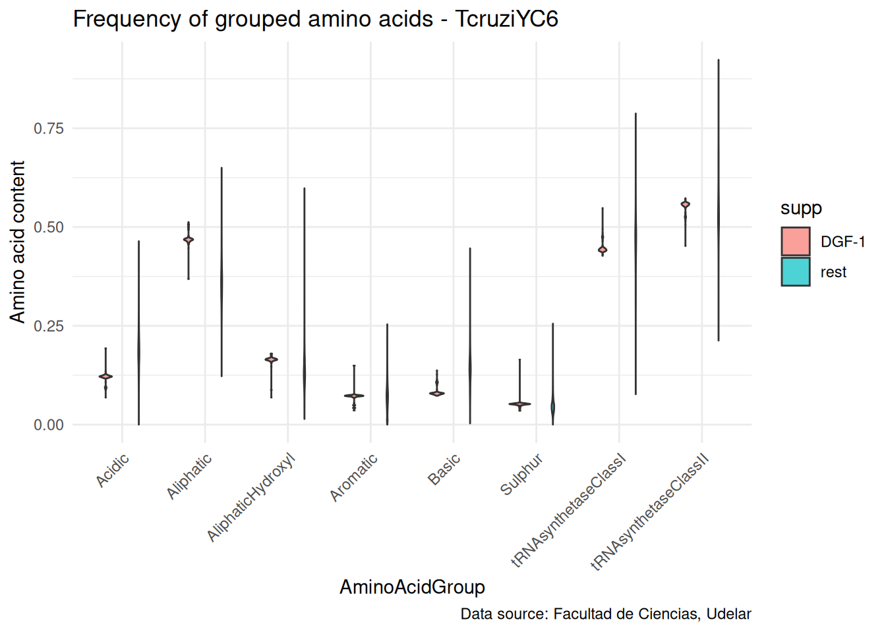

Amino acid frequency

Code
# Load necessary libraries
#library(data.table)
library(seqinr)
library(ggplot2)
library(ggfortify)
library(Rtsne)
library(tidyverse)
##
library(gridExtra)
library(ggridges)
library(ggbeeswarm)
library(cowplot)
##
library(Biostrings)
library(dplyr)
library(purrr)
library(tidyr) Amino_Acid Three_Letter_Abbreviation One_Letter_Symbol Molecular_Weight
Alanine Ala A 89
Arginine Arg R 174
Asparagine Asn N 132
Aspartic acid Asp D 133
Cysteine Cys C 121
Glutamine Gln Q 146
Glutamic acid Glu E 147
Glycine Gly G 75
Histidine His H 155
Isoleucine Ile I 131
Leucine Leu L 131
Lysine Lys K 146
Methionine Met M 149
Phenylalanine Phe F 165
Proline Pro P 115
Serine Ser S 105
Threonine Thr T 119
Tryptophan Trp W 204
Tyrosine Tyr Y 181
Valine Val V 117Code
calculate_amino_acid_frequencies <- function(file) {
fasta <- read.fasta(file, seqtype = "AA") # Leer archivo multifasta de aminoácidos
amino_acids <- c("A", "R", "N", "D", "C", "Q", "E", "G", "H", "I", "L", "K", "M", "F", "P", "S", "T", "W", "Y", "V")
# Procesar cada secuencia en el archivo
results <- lapply(names(fasta), function(seq_id) {
seq <- toupper(getSequence(fasta[[seq_id]], as.string = TRUE)[[1]]) # Convertir a texto y mayúsculas
aa_counts <- table(factor(strsplit(seq, "")[[1]], levels = amino_acids)) # Contar aminoácidos con niveles
total_aa <- sum(aa_counts) # Total de aminoácidos en la secuencia
# Crear un dataframe de frecuencias por aminoácido
freq_df <- data.frame(AminoAcid = names(aa_counts),
Frequency = as.vector(aa_counts) / total_aa)
# Pivotar el dataframe para tener aminoácidos como columnas
freq_wide <- freq_df %>%
pivot_wider(names_from = AminoAcid, values_from = Frequency,
values_fill = list(Frequency = 0)) # Llenar valores faltantes con 0
# Agregar columnas con el nombre del archivo y el ID de la secuencia
freq_wide <- freq_wide %>%
mutate(File = basename(file), Sequence_ID = seq_id) %>%
relocate(File, Sequence_ID) # Asegurar el orden de las columnas
return(freq_wide)
})
# Combinar resultados de todas las secuencias en un archivo
bind_rows(results)
}
# Procesar todos los archivos
# all_frequencies_coding_prot <- lapply(file.path(output_dir, transformed$out_rest_gscissors_prot), calculate_amino_acid_frequencies)
# # Combinar resultados de todos los archivos en un solo dataframe
# combined_freqs_coding_prot <- bind_rows(all_frequencies_coding_prot) %>%
# replace(is.na(.), 0) # Reemplazar NA por 0
combined_freqs_coding_prot$File <- gsub(".*_([A-Za-z0-9]+)_translated\\.fasta", "\\1", combined_freqs_coding_prot$File)
long_freqs_coding_prot <- combined_freqs_coding_prot %>%
pivot_longer(cols = c(3:22), # Especifica las columnas de aminoácidos
names_to = "AminoAcid", # Nombre de la nueva columna para los nombres de los aminoácidos
values_to = "Freq") %>% # Nombre de la nueva columna para las frecuencias
mutate(Freq = Freq * 100) # Convertir frecuencias a porcentaje
summary_data_coding_prot <- long_freqs_coding_prot %>%
group_by(File, AminoAcid) %>%
summarise(
mean_freq = mean(Freq),
sd_freq = sd(Freq),
.groups = "drop"
)
# Procesar todos los archivos target
all_frequencies_target <- lapply(file.path(output_dir, transformed$out_gscissors_all_prot), calculate_amino_acid_frequencies)
# Combinar resultados de todos los archivos en un solo dataframe
# combined_freqs <- bind_rows(all_frequencies_target)
combined_freqs_target <- bind_rows(all_frequencies_target) %>%
replace(is.na(.), 0) # Reemplazar NA por 0
combined_freqs_target$File <- gsub(".*_([A-Za-z0-9]+)_translated\\.fasta", "\\1", combined_freqs_target$File)
long_freqs_target <- combined_freqs_target %>%
pivot_longer(cols = A:Y, # Especifica las columnas de aminoácidos
names_to = "AminoAcid", # Nombre de la nueva columna para los nombres de los aminoácidos
values_to = "Freq") %>% # Nombre de la nueva columna para las frecuencias
mutate(Freq = Freq * 100) # Convertir frecuencias a porcentaje
summary_data_target <- long_freqs_target %>%
group_by(File, AminoAcid) %>%
summarise(
mean_freq = mean(Freq),
sd_freq = sd(Freq),
.groups = "drop"
)Code
plot_bar_gc <- function(data, plot_title, y_label) {
ggplot(data, aes(x = AminoAcid, y = mean_freq, fill = AminoAcid)) +
geom_bar(stat = "identity", alpha = 0.7, width = 0.5) +
geom_errorbar(
aes(
ymin = mean_freq - sd_freq,
ymax = mean_freq + sd_freq
),
width = 0.4, colour = "orange", alpha = 0.6, size = 0.9
) +
geom_text(aes(label = round(mean_freq, 2)), vjust = -0.5, size = 3) +
ylab(y_label) +
labs(
title = plot_title,
caption = "Data source: Facultad de Ciencias, Udelar"
) +
theme_minimal() +
theme(
axis.line.y = element_blank(),
axis.ticks.y = element_blank(),
axis.text.x = element_text(angle = 45, hjust = 1)
)
}
unique_files <- unique(summary_data_coding_prot$File)
for (file_name in unique_files) {
data_subset <- filter(summary_data_coding_prot, File == file_name)
print(plot_bar_gc(
data_subset,
plot_title = paste("Amino acid frequency -", file_name),
y_label = "Amino acid content"
))
# readline(prompt = "Presiona Enter para ver el siguiente gráfico...")
}Warning: Using `size` aesthetic for lines was deprecated in ggplot2 3.4.0.
ℹ Please use `linewidth` instead.


Code
unique_files <- unique(summary_data_target$File)
for (file_name in unique_files) {
data_subset <- filter(summary_data_target, File == file_name)
print(plot_bar_gc(
data_subset,
plot_title = paste("Amino acid frequency -", file_name),
y_label = "Amino acid content"
))
# readline(prompt = "Presiona Enter para ver el siguiente gráfico...")
}



Code
# plot_barplot_contrast <- function(data, plot_title, y_label) {
# dodge <- position_dodge(width = 0.5) # Definimos un dodge para ambas capas
# ggplot(data, aes(x = AminoAcid, y = mean_freq, fill = supp)) +
# geom_bar(
# stat = "identity",
# alpha = 0.7,
# width = 0.5,
# position = dodge
# ) +
# # geom_errorbar(
# # aes(
# # ymin = mean_freq - sd_freq,
# # ymax = mean_freq + sd_freq
# # ),
# # width = 0.25,
# # colour = "orange",
# # alpha = 0.8,
# # size = 0.7,
# # position = dodge # Aplicamos el mismo dodge para alinear las barras de error
# # ) +
# # scale_fill_manual(values = c("rest" = "#E15759", key_name = "#5fd4b1")) +
# # geom_text(
# # aes(label = round(mean_freq, 2)),
# # vjust = -0.5,
# # size = 3,
# # position = dodge # Alineamos también las etiquetas
# # ) +
# ylab(y_label) +
# labs(
# title = plot_title,
# caption = "Data source: Facultad de Ciencias, Udelar"
# ) +
# theme_minimal() +
# theme(
# axis.line.y = element_blank(),
# axis.ticks.y = element_blank(),
# axis.text.x = element_text(angle = 45, hjust = 1)
# )
# }
# summary_data_target$supp <- rep(key_name, length(summary_data_target$File))
# summary_data_coding_prot$supp <- rep("Other", length(summary_data_coding_prot$File))
# target_coding_seq <- bind_rows(summary_data_target, summary_data_coding_prot)
# unique_files <- unique(target_coding_seq$File)
# for (file_name in unique_files) {
# data_subset <- filter(target_coding_seq, File == file_name)
# print(plot_barplot_contrast(
# data_subset,
# plot_title = paste("Amino acid frequency -", file_name),
# y_label = "Amino acid content"
# ))
# # readline(prompt = "Press Enter to see the next plot...")
# }
plot_barplot_contrast <- function(data, plot_title, y_label) {
dodge <- position_dodge(width = 0.5) # Define dodge for bar alignment
ggplot(data, aes(x = AminoAcid, y = mean_freq, fill = supp)) +
geom_bar(
stat = "identity",
alpha = 0.7,
width = 0.5,
position = dodge
) +
ylab(y_label) +
labs(
title = plot_title,
caption = "Data source: Facultad de Ciencias, Udelar"
) +
theme_minimal() +
theme(
axis.line.y = element_blank(),
axis.ticks.y = element_blank(),
axis.text.x = element_text(angle = 45, hjust = 1)
)
}
# Map one-letter codes to three-letter codes before plotting
amino_acids_one_letter <- c("A", "R", "N", "D", "C", "Q", "E", "G", "H", "I",
"L", "K", "M", "F", "P", "S", "T", "W", "Y", "V")
amino_acids_three_letter <- c(
"Ala", "Arg", "Asn", "Asp", "Cys",
"Gln", "Glu", "Gly", "His", "Ile",
"Leu", "Lys", "Met", "Phe", "Pro",
"Ser", "Thr", "Trp", "Tyr", "Val"
)
summary_data_target$supp <- rep(key_name, length(summary_data_target$File))
summary_data_coding_prot$supp <- rep("Other", length(summary_data_coding_prot$File))
target_coding_seq <- bind_rows(summary_data_target, summary_data_coding_prot)
target_coding_seq$AminoAcid <- factor(
target_coding_seq$AminoAcid,
levels = amino_acids_one_letter,
labels = amino_acids_three_letter
)
unique_files <- unique(target_coding_seq$File)
for (file_name in unique_files) {
data_subset <- filter(target_coding_seq, File == file_name)
print(plot_barplot_contrast(
data_subset,
plot_title = paste("Amino acid frequency -", file_name),
y_label = "Amino acid content"
))
}


Code
classification_aminoacids <- function(data, genome_col = "File", id_col = "Sequence_ID", type) {
result_combained_data <- data.frame(
"Genome" = data[[ genome_col]],
"id" = data[[ id_col]],
"Aliphatic" = rowSums(data[, c("G", "A", "V", "L", "I")]),
"Aromatic" = rowSums(data[, c("F", "W", "Y")]),
"Sulphur" = rowSums(data[, c("C", "M")]),
"Basic" = rowSums(data[, c("K", "R", "H")]),
"Acidic" = rowSums(data[, c("D", "E", "N", "Q")]),
"AliphaticHydroxyl" = rowSums(data[, c("S", "T")]),
"tRNAsynthetaseClassI" = rowSums(data[, c("E", "Q", "R", "C", "M", "V", "I", "L", "Y", "W")]),
"tRNAsynthetaseClassII" = rowSums(data[, c("G", "A", "P", "S", "T", "H", "D", "N", "K", "F")])
)
}
classfied_amino_acids_targt <- classification_aminoacids(combined_freqs_target)
classfied_amino_acids_coding_prot <- classification_aminoacids(combined_freqs_coding_prot)Code
plot_violin_group <- function(data, plot_title, y_label) {
ggplot(data, aes(x = AminoAcidGroup, y = Freq, fill = AminoAcidGroup)) +
geom_violin(alpha = 0.7, width = 0.5) +
geom_boxplot(width = 0.1, fill = "white", alpha = 0.3, outlier.shape = NA) +
scale_fill_brewer(palette = "Dark2") +
ylab(y_label) +
labs(
title = plot_title,
caption = "Data source: Facultad de Ciencias, Udelar"
) +
theme_minimal() +
theme(
axis.line.y = element_blank(),
axis.ticks.y = element_blank(),
axis.text.x = element_text(angle = 45, hjust = 1)#,
# legend.position = "none"
)
}
long_data_coding_prot <- classfied_amino_acids_coding_prot %>%
pivot_longer(
cols = -c(Genome, id), # Excluir columnas que no se quieren transformar
names_to = "AminoAcidGroup",
values_to = "Freq"
)
# Function plot_violin_group call
# plot_violin_group(
# data = long_data_coding_prot,
# plot_title = "Frequency of grouped amino acids",
# y_label = "Amino acid content"
# )
unique_files <- unique(long_data_coding_prot$Genome)
for (file_name in unique_files) {
data_subset <- filter(long_data_coding_prot, Genome == file_name)
print(plot_violin_group(
data_subset,
plot_title = paste("Frequency of grouped amino acids -", file_name),
y_label = "Amino acid content"
))
# readline(prompt = "Presiona Enter para ver el siguiente gráfico...")
}


Code
long_data_target <- classfied_amino_acids_targt %>%
pivot_longer(
cols = -c(Genome, id), # Excluir columnas que no se quieren transformar
names_to = "AminoAcidGroup",
values_to = "Freq"
)
# Function plot_violin_group call
# plot_violin_group(
# data = long_data_coding_prot,
# plot_title = "Frequency of grouped amino acids",
# y_label = "Amino acid content"
# )
unique_files <- unique(long_data_target$Genome)
for (file_name in unique_files) {
data_subset <- filter(long_data_target, Genome == file_name)
print(plot_violin_group(
data_subset,
plot_title = paste("Frequency of grouped amino acids -", file_name),
y_label = "Amino acid content"
))
# readline(prompt = "Presiona Enter para ver el siguiente gráfico...")
}


Code
plot_violin_contrast <- function(data, plot_title, y_label) {
dodge <- position_dodge(width = 0.8) # define the dodge to separate the groups
ggplot(data, aes(x = AminoAcidGroup, y = Freq, fill = supp)) +
geom_violin(alpha = 0.7, width = 0.5, position = dodge) +
# geom_boxplot(width = 0.1, fill = "white", alpha = 0.3, outlier.shape = NA, position = dodge) +
# scale_fill_brewer(palette = "Dark2") +
ylab(y_label) +
labs(
title = plot_title,
caption = "Data source: Facultad de Ciencias, Udelar"
) +
theme_minimal() +
theme(
axis.line.y = element_blank(),
axis.ticks.y = element_blank(),
axis.text.x = element_text(angle = 45, hjust = 1)
)
}
long_data_target$supp <- rep(key_name, length(long_data_target$Genome))
long_data_coding_prot$supp <- rep("rest", length(long_data_coding_prot$Genome))
target_coding_seq_class <- bind_rows(long_data_target , long_data_coding_prot)
unique_files <- unique(target_coding_seq_class$Genome)
for (file_name in unique_files) {
data_subset <- filter(target_coding_seq_class, Genome == file_name)
print(plot_violin_contrast(
data_subset,
plot_title = paste("Frequency of grouped amino acids -", file_name),
y_label = "Amino acid content"
))
# readline(prompt = "Presiona Enter para ver el siguiente gráfico...")
}



Code
summary_data_class_target <- long_data_target %>%
group_by(Genome, AminoAcidGroup) %>%
summarise(
mean_freq = mean(Freq),
sd_freq = sd(Freq),
# supp = supp,
.groups = "drop"
)
summary_data_class_coding_prot <- long_data_coding_prot %>%
group_by(Genome, AminoAcidGroup) %>%
summarise(
mean_freq = mean(Freq),
sd_freq = sd(Freq),
# supp = supp,
.groups = "drop"
)
plot_barplot_contrast_group <- function(data, plot_title, y_label) {
dodge <- position_dodge(width = 0.5) # Definimos un dodge para ambas capas
ggplot(data, aes(x = AminoAcidGroup, y = mean_freq, fill = supp)) +
geom_bar(
stat = "identity",
alpha = 0.7,
width = 0.5,
position = dodge
) +
geom_errorbar(
aes(
ymin = mean_freq - sd_freq,
ymax = mean_freq + sd_freq
),
width = 0.25,
colour = "orange",
alpha = 0.8,
size = 0.7,
position = dodge # Aplicamos el mismo dodge para alinear las barras de error
) +
# scale_fill_manual(values = c("rest" = "#E15759", key_name = "#5fd4b1")) +
geom_text(
aes(label = round(mean_freq, 2)),
vjust = -0.5,
size = 3,
position = dodge # Alineamos también las etiquetas
) +
ylab(y_label) +
labs(
title = plot_title,
caption = "Data source: Facultad de Ciencias, Udelar"
) +
theme_minimal() +
theme(
axis.line.y = element_blank(),
axis.ticks.y = element_blank(),
axis.text.x = element_text(angle = 45, hjust = 1)
)
}
summary_data_class_target$supp <- rep(key_name, length(summary_data_class_target$Genome))
summary_data_class_coding_prot$supp <- rep("rest", length(summary_data_class_coding_prot$Genome))
target_coding_seq_group <- bind_rows(summary_data_class_target, summary_data_class_coding_prot)
unique_files <- unique(target_coding_seq_group$Genome)
for (file_name in unique_files) {
data_subset <- filter(target_coding_seq_group, Genome == file_name)
print(plot_barplot_contrast_group(
data_subset,
plot_title = paste("Amino acid frequency -", file_name),
y_label = "Amino acid content"
))
# readline(prompt = "Press Enter to see the next plot...")
}